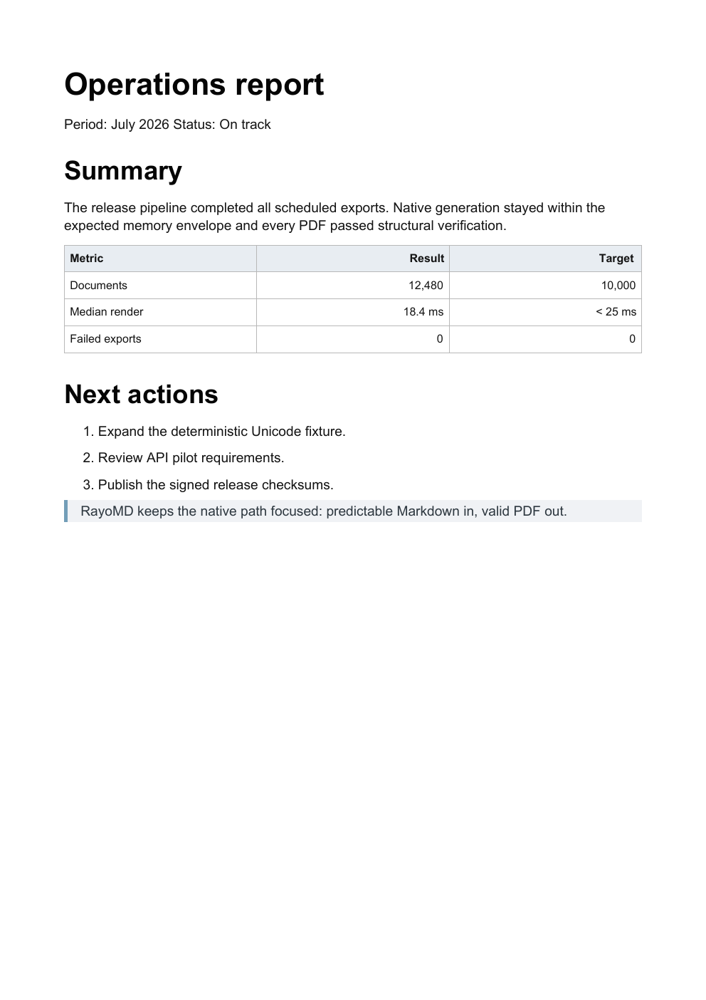

CI documentation
Turn release notes, manuals, and repository Markdown into reproducible build artifacts.
rayomd --export CHANGELOG.md release.pdf
Open source · Apache-2.0 · v2.3.0
Markdown to PDF without a browser.
A compact native converter for CI artifacts, batch reports, and applications where startup time, memory, and deployment size matter.
rayomd --export report.md report.pdf
Dated release measurements vary by platform and workload. Review the methodology.
The native path
RayoMD parses Markdown and writes PDF bytes directly from C++17. The default path does not start a browser, bundle a runtime, or require Pandoc or LaTeX.
# Report
C++17
%PDF-1.7
Real output
Every preview below comes from the current RayoMD executable. Open the Markdown, the generated PDF, and the exact command used.

Generated sample
A compact generated report with a table, ordered list, quote, and inline emphasis.
rayomd --export operations-report.md operations-report.pdf native elegant normal
Focused workloads
Turn release notes, manuals, and repository Markdown into reproducible build artifacts.
rayomd --export CHANGELOG.md release.pdf
Convert structured Markdown from backend jobs or AI pipelines without maintaining a browser pool.
cat report.md | rayomd --stdin report.pdf
Keep conversion offline and package the public C++ exporter inside a focused native application.
#include "rayomd/tiny_pdf.h"
Bounded parallel batch
RayoMD caps worker counts by workload size. In the v2.2.0 audit, six workers produced byte-identical PDFs across 160-file folder batches with zero failures.
1 worker7.303 ms/file
6 workers2.699 ms/file
Peak RSS: 19.23 MB to 33.33 MB
1 worker5.582 ms/file
6 workers1.235 ms/file
Peak RSS: 13.93 MB to 47.59 MB
Deliberate scope
RayoMD is a native Markdown subset, not a replacement for every document engine. The boundary is part of the product.
Dated and reproducible
Fresh-process Windows 11 measurements include startup, parsing, PDF generation, and file output. Compared tools provide broader feature sets.
| Workload | RayoMD | md-to-pdf | Pandoc + XeLaTeX | Next / RayoMD |
|---|---|---|---|---|
| Tiny README | 15.45 ms | 1,717.89 ms | 3,210.69 ms | 111.2x |
| Feature mix | 17.29 ms | 2,281.90 ms | 3,377.94 ms | 132.0x |
| 500-row table | 18.66 ms | 2,340.90 ms | 3,427.50 ms | 125.5x |
Optional reversible profile
RayoMD can embed the original UTF-8 Markdown in its PDF 2.0 rayomd-source/1 profile, validate length and SHA-256 integrity, and recover it byte for byte later.
rayomd --export report.md archive.pdf --embed-source
rayomd --inspect-source archive.pdf
rayomd --recover-source archive.pdf recovered.md
Windows utility
The Windows build combines the native exporter with a compact Dear ImGui interface. Linux keeps the same exporter in a small CLI.
Choose the deployment
Download the Windows app or Linux CLI, embed the C++ API, or build from Apache-2.0 source. Default Linux stays libcurl-free; a separate curl build enables URL images.
Share your volume, workflow, and one blocking requirement. The beta will be built around verified workloads.